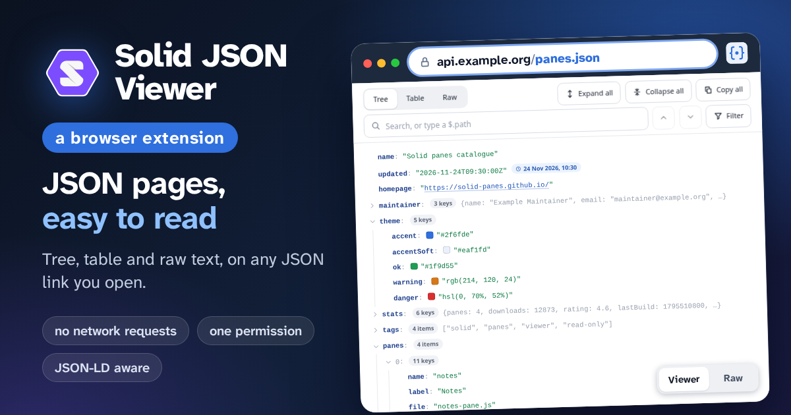

Solid JSON Viewer
A browser extension that shows JSON and JSON-LD pages as a tree, a table or raw text.

Privacy
No network requests, no data collected. One permission: storage.
Install
Not in the Chrome or Firefox stores yet. For now it is loaded from a folder.
Get the folder first: clone the repository, or download the zip and unpack it.
Chrome, Edge, Brave
- Open
chrome://extensions(Edge:edge://extensions, Brave:brave://extensions). - Turn on Developer mode.
- Click Load unpacked and choose the folder, the one with
manifest.jsonin it. - To view local files, open the extension's Details and turn on Allow access to file URLs.
Firefox 140 or later
- Open
about:configand setdevtools.jsonview.enabledtofalse. Otherwise Firefox's own JSON viewer takes the page first. - Open
about:debugging#/runtime/this-firefox, click Load Temporary Add-on… and choosemanifest.jsonin the folder. A temporary add-on is removed when Firefox restarts. - If JSON pages are not taken over, open the add-on's Permissions tab in
about:addonsand allow it on all sites.
Where it comes from
The viewer is the JSON pane for the SolidOS data browser, the same file, unchanged. The extension gives it the text of the page you opened.
Source and details: github.com/solid-panes/extension · AGPL-3.0-or-later · Melvin Carvalho